더인 교육 14일차
들어가며 · 잠깐 딴소리 · Clean 공정 · 예상되는 문제 · 오염 물질 · Cleaning 방법 · Wet Clean 과정 · Dry Clean 과정 · Wafer를 처음 투입 할 때 RCA Cleaning을 진행 · 그림을 통해 process 이해해보기 · 변천사 · Cleaning Parameter · 딴소리 · Wet Chemical의 재료 · R! Loading Effect in Etch · Organic Contaminant, Metallic Contaminant · Cleaning Method · Attenuated phase shift mask · Silicon Surface · Drying · Resist Strip · Cleaning Perfectly · ALE · Etch에 대해서 정리해보자 (잠깐 딴 얘기)
1. 들어가며
- 다음주 목요일에 CMP 수업
Q. 왜 Metal이 17~18개 쭉 올라가는가?
A.
- V = IR 옴의 법칙
- Metal 라인이 갖고 있는 고유한 저항들이 있는 건 어쩔 수 없다.
- Metal 라인이 계속해서 길어지게 되면 저항이 계속 생기고 Voltage가 떨어진다.
- 외부에서 전압을 걸어주면 Metal을 통해서 결국 Gate까지 가잖아?
- R = 비저항 L/A
- 결국 저항을 최소화 해야할 것 아니야? 근데 패턴이 점점 작아지고, Active 영역도 줄어들면 줄어든 크기에 맞춰서 Contact하고 Metal을 연결해주는 1차? 애들도 작아져야 한다. 아래는 그 설명
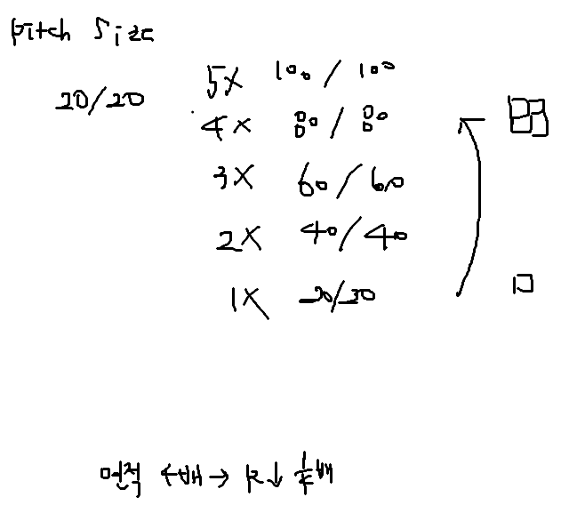
- 이런 이유에서 Metal이 위에 올라가서 20개가 되고 하는 것이다.
대상: “이런 이유에서 Metal이 위에 올라가서 20개가 되고 하는 것이다.”
근데 이게 왜 몇 배를 해주고 있는건데? 20/20 이라고 쓰는 이유가 뭔데?
2. 잠깐 딴소리
반도체에서 커뮤니케이션이란? 앞에 공정에 영향을 받고, 내 공정은 뒷 공정에 영향을 주는 것이다. 따라서 기술적인 토의가 필요한 것이다. (내가 목표하는 공정만 알면 돼! 가 아니다)
공정을 얼추 다 배웠으니 서로 간의 연관성을 생각하면서 공부하자
3. Clean 공정
- Defect을 제거하는 공정이다. 그럼 어떤 Defect이 있는지를 배워야겠지? 그리고 그 Defect이 어느 공정에서 발생하는 지 알면 좋고
- Clean도 Wet Etch에서 Dry Etch 으로 바뀐 것처럼 Dry Clean 쪽으로 바뀌었다. Wet Clean을 물론 사용하지만.
4. 예상되는 문제
Photo 공정 - short, open, 마스크에 있는게 계속 print
Etch 공정 - short, open, 막혀서 Etch X
Ion Implant 공정 - 이온 주입이 잘 안되겠지 막혀서
Depo 공정
→ Cleaning을 잘 하는 것도 중요하지만 애초에 오염이 안되는 환경을 만드는게 더 중요하겠다.
5. 오염 물질
- 금속 잔류물
- 유기 물질
- Native Oxide - 잘 케어해도 존재하는 공기는 78% N₂ 21% O₂ 이렇기 때문에 자연 산화막이 생긴다.
- 어떠한 Particle
6. Cleaning 방법
- Chemical Treatment, Gas, Physical Method
- 최근 Trend는 Wet Clean을 사용하다가 Dry Clean을 같이 쓰는 분위기이다.
7. Wet Clean 과정
- 크게 보면 결국은 Etch를 하는 과정이다.
- H₂O₂를 사용하는건 결국은 산화 시키는 것이다?
순서: Wet Clean → 세정 용액 → Rinse → Dry
- H₂O₂(과산화수소)의 세정 용액과 O₃(오존계열)의 세정 용액이 있다.
- 설거지하고 나면 물자국이 존재하는 것 같이 Wafer 위에도 물자국이 있고, 그런 곳 위에 Oxidation을 하면 성장 속도에 있어 빠르게/느리게 되는 문제가 생길 수 있다. 그래서 잘 Dry 시켜줘야 한다.
(1) Chemical
- SC1 → Organic particle 제거
- SC2 → Metallic particle 제거
- 확실하진 않지만 H₂O₂ 모두 SC1, SC2 용액 기본 구성 물질인 듯 함
(2) Piranha
(3) H₃PO₄ → Nitride (LOCOS에서 Oxide 기르고 Nitride를 제거한다)
(4) HF → SiO₂ 산화막 제거
8. Dry Clean 과정
(1) Laser: 레이저를 쏴서 Metalic contaminant를 깨버린다.
(2) Plasma: 유기물, Al₂O₃, Si 화합물
(3) UV/O₃: 유기물 오염
(4) UV/Cl₂: Metallic Ion
(5) HF Gas: SiO₂ 산화막 제거
SC1: H₂O₂ + NH₄OH + D.I
- 해당 물질들은 각각 넣어주는 것이고, 회사에 따라서, 공정에 따라서 혼합비가 다르다.
9. Wafer를 처음 투입 할 때 RCA Cleaning을 진행
SC1 → SC2 → HF
- 유기물질, 금속물질, 자연산화막 제거하는 순서로 Wafer를 깔끔하게 만들어준다.
10. 그림을 통해 process 이해해보기
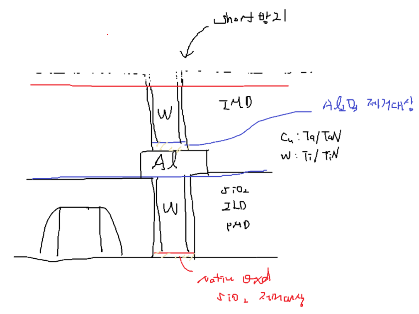
(1) SiO₂ 제거
- 존재하고 있는 SiO₂는 자연산화막이며 10Å 정도 자라는데, 결국 금속과 반도체 사이에서 절연을 해버리는 상태니 저걸 지워줘야겠지?
- HF를 통해서 제거 해준다.
- 노드 분리라는건 끊겨 있어야하는 부분을 끊는 것을 말한다. 금속끼리 쭉 연결되어있으니 그 부분에서 short가 나니 더 CMP(?)를 진행해준다.
(2) Al₂O₃ 제거
- HF를 사용해도 제거는 되지만 Al₂O₃ 뿐만 아니라 Al도 같이 날라간다.
- Ar+ 이온을 가지고 Dry Etch를 시켜서 날린다.
11. 변천사
12pg
- RCA 클린은 RCA 회사에 의해서 만들어졌다.
- 2000년대 초부터는 Single process로
- Wet → Dry 쪽으로
13pg
Surface Roughness를 설명하시며
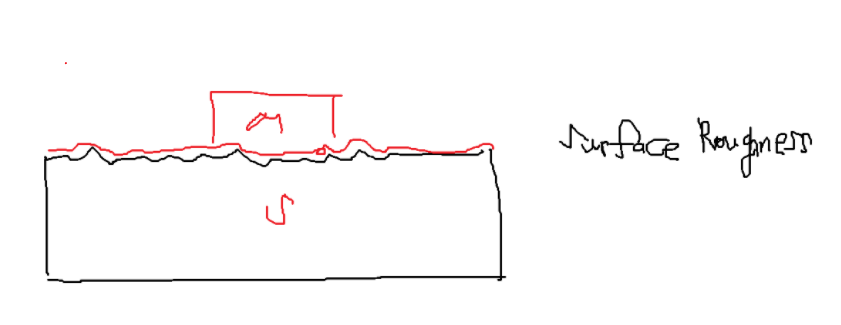
- Si을 만들고 나면 표면이 저렇게 울퉁불퉁하게 된다.
- 이렇게 울퉁불퉁한 표면 위에 만들게 되면 접착이 불량이 되니 전류 누설이 생길 수도 있고, 전하 이동도에 영향을 주는 문제가 생긴다.
- 잘 이동하지 못한다는 것은 전하가 이동하며 산란되고 막 부딪히니까 이동도가 떨어진다는 것이다.
EUV와 Gate를 언급하며
대상: “EUV와 Gate를 언급하며”
여기 내용은 내가 더 정리해서 내걸로 만드는거야
- 반사 어쩌고 저쩌고 실제로 투입되는 빛 어쩌구 67.5%, 전체 과정은 3%
- EUV는 stochastic effect 확률적인 결함에 의한 문제가 생긴다.
- 여기에서 데이터를 통한 분석을 한다는게 무슨 소리냐? CD 모니터링을 한다는 것을 특정 위치 몇 개의 포인트를 정해놓고 LER, LWR를 확정하면서 Average를 파악한다. 예를 들어 10 point를 집어놓고 그걸로 전체의 특성을 예측하겠지
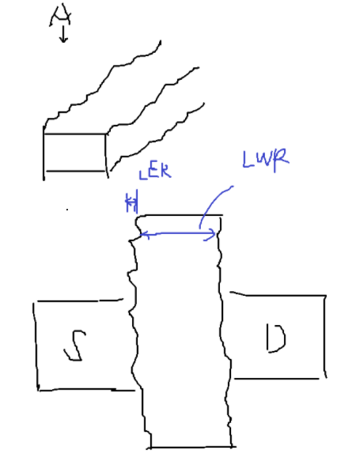
- IDS 비례 식에 의해서 이동도 × Cox × W/L 에서 이동도가 떨어지면 Saturation이 떨어지니까 이동도를 확보해야한다.
12. Cleaning Parameter
Chemical Rxn, Temperature, Mixture Rate, Process Sequence
→ 이 중에서 문제를 해결할 수 있는 방법이 있다.
Q. Etch Rate? Edge Rate?? 하여간 울퉁불퉁한걸 최소화하고 싶어. 이건 어떻게 해야해?
A. 온도랑 농도를 낮춰서 이 문제를 해결한다. (반대면 울퉁불퉁한 정도가 더 심해질테니까) 그리고 이게 바로 차세대 Cleaning의 방향성이라고 한다.
Q. 온도랑 농도를 낮추면 어떤 문제가 생기지?
A. Defect이 제거될 수 있는 능력이 줄어든다. Performance가 떨어지니까 어떻게 커버해야할까?
13. 딴소리
어떤 한 강사님이, 한 AI의 답변이, 한 정보가 다 맞을 것이라고 생각하지 말아라. 뭐가 맞고 틀린지 판단하고 잘 정리해라
14pg
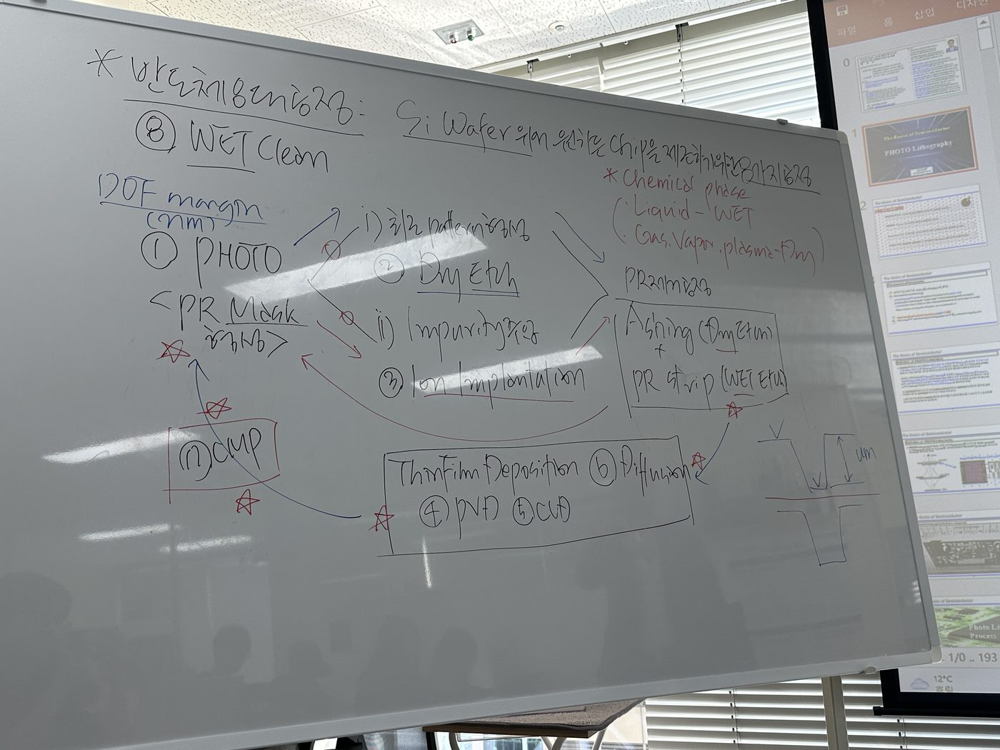
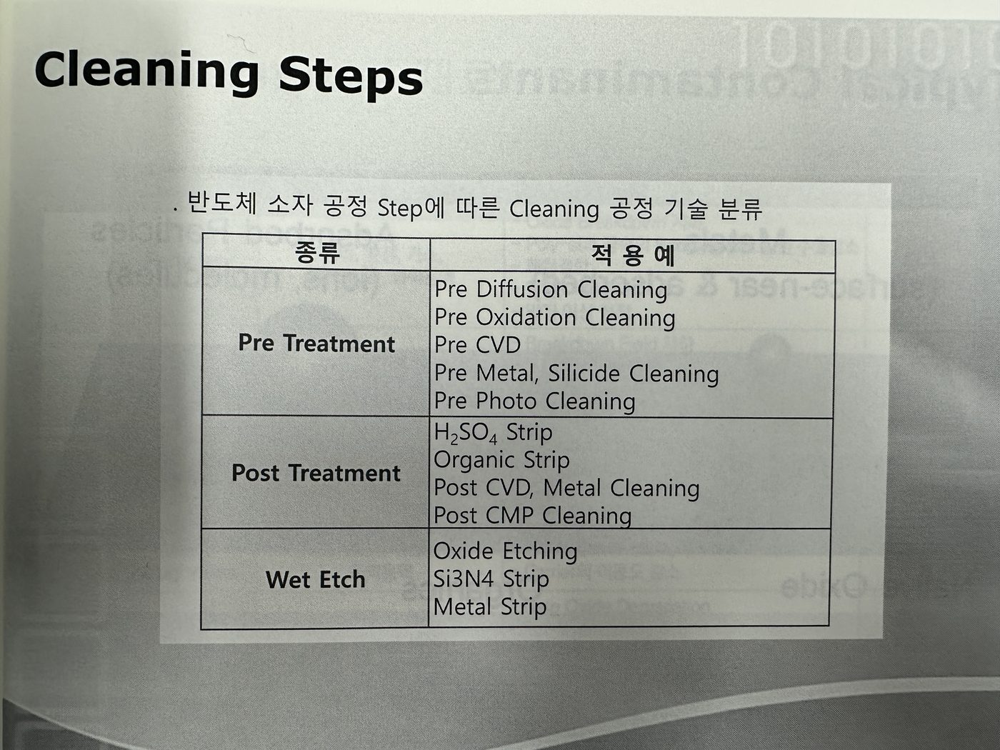
- PR에서 Resist 라는 말이 Etch랑 Ion Implantation을 막아주는건데 순간 빛! 이러고 있었다.
16pg
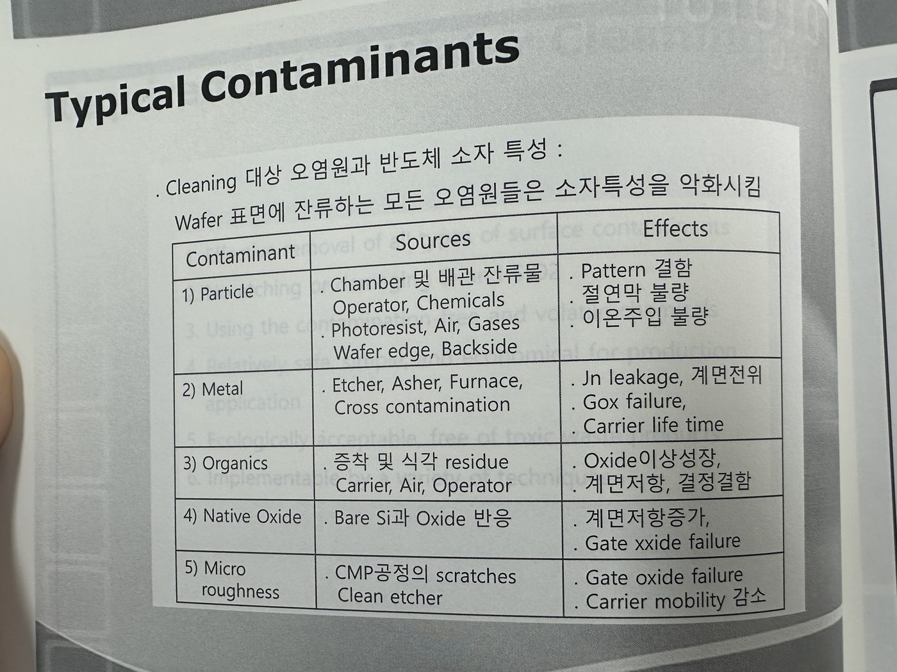
- Particle이 생길 수 있는 곳은 너무나도 다양하다.
- 배관에서도 골이지는 부분에서 잔류할 수도 있고, 변형해서 언젠가 문제가 될 수 있다. 배관 쪽 엔지니어는 유체역학적으로 어떻게 하면 잘 빠져나가게 할 수 있을까를 공부한다고 한다.
대상: “배관 쪽 엔지니어는 유체역학적으로 어떻게 하면 잘 빠져나가게 할 수 있을까를 공부한다고 한다.”
이런 분야는 반도체 뿐만 아니라 여러가지 분야에서 필수 아닌가? 재밌어보이는데
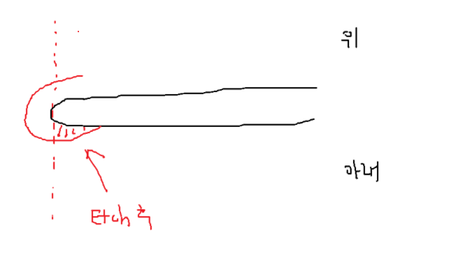
- Wafer Edge는 여러가지 Defect이 발생할 수 있다. Depo가 얌전히 되는 게 아니고 뒷면도 살짝 있게 되면 Etch를 해도 뒷면에 남아서 문제를 일으킨다.
17pg
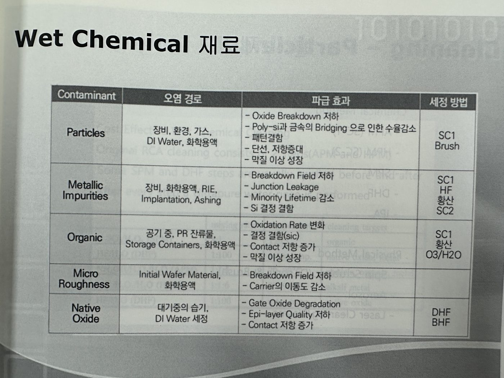
- 여기를 필기해서 뭐하나 아직 이걸 외우기에는 벅차다.
- DHF(Dilute HF)라는건 HF(불산)을 희석해서 쓴다는 것이다. 100:1, 200:1 이렇게 사용하니까 Etch는 거의 안되고 세정에 목적에
- BOE (HF+NH₄F)
18pg
- 세정 용액은 H₂O₂를 기본으로 한다.
(1) 화학적인 방법
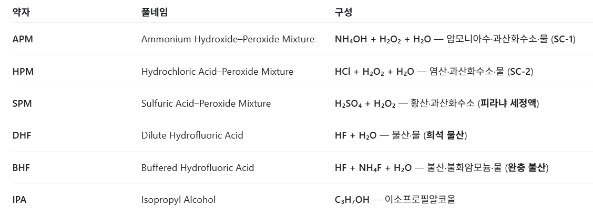
- Cl 쪽이 금속 이온이랑 반응하겠고, 유기물은 산화되어서 어떻게 되겠네
(2) 물리적인 방법
- Di Sonic은 안경점
- Aerosol 은 모기약 처럼 푸쉭
- Laser는 레이저겠지
19pg
- Metal은 황산을 써서 날린다. SPM에서 Sulfuric Acid 이니까.
- PR도 경화되면 또는 그냥 유기물들은 잘 안날라간다. 그래서 UV랑 O₃를 같이 쓰고, O₂ Plasma 같은걸로 지워진다.
- 자연 산화막은 HF를 사용해주는 느낌이고, SiN이나 Poly는 H₃PO₄로 날려준다.
20pg(과거) → 21pg(현재)
- Step 이 늘어난다는 것은 결국 Defect이 늘어난다. → Yield가 떨어진다.
대상: “Step 이 늘어난다는 것은 결국 Defect이 늘어난다. → Yield가 떨어진다.”
기본 마인드로 탑재
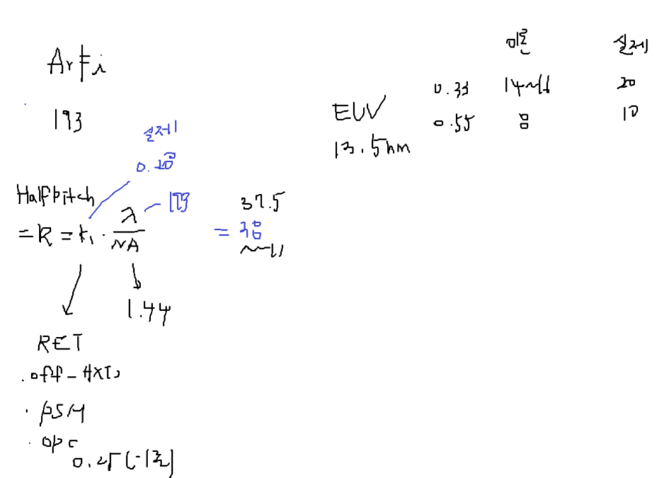
- RET는 Resolution Enhancement Technology
- 혼자 계산해서 이론 계산값 꼭 구해보기
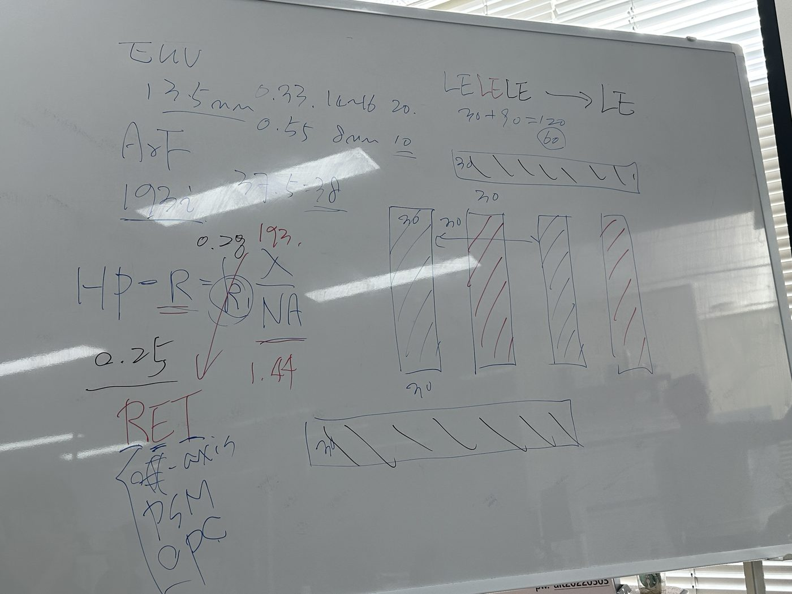
- 30nm pitch를 만들려고 하는데 37.5 약 38nm까지만 가능하니 30nm pitch를 갖고 있는 경우에는 한 번에 패터닝이 안된다.
- 따라서 멀티 패터닝을 해서 pitch 사이즈를 만들 수 있다.
- 그렇지만 애초에 EUV를 사용하면 멀티 패터닝을 하지 않아도 된다.
Q. LELELE → LE 로 줄이면 좋은 점
A. 가장 큰 장점은 Step이 줄어들어서 defect이 줄어들고 이는 곧 수율 증가로 직결된다.
당연히 사용하는 소재의 양도 적어지고, 시간도 줄어들고 하는 장점이 있지만 결국 가장 중요한건 위 문장이다.
14. Wet Chemical의 재료
- 아 그렇구나~
(1) 유기 용제
- 알코올 계열
- 벤젠 계열
(2) 산, 알칼리 계열
- H₂SO₄, H₃PO₄, HCl → 황산, 인산, 염산
15. R! Loading Effect in Etch
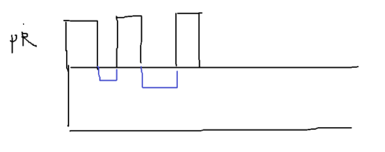
(1) micro effect
- A/R 큰 부분과 A/R 이 작은 부분의 Etch Rate이 다르다.
- Etch rate은 좁은데는 들어가기도 어렵고 부산물이 나오기도 어렵다. 큰데는 들어가기도 쉽고 부산물이 나오기도 쉽다.
(2) macro effect
16. Organic Contaminant, Metallic Contaminant
33, 34pg
- Si 위에 있는 Metal 들은 전자친화도가 높기 때문에 Si가 환원되며(전자를 잃으며-Metal에게 빼앗기며) Metal과 강하게 결합한다.
- Si 기준으로 위 물질과는 결합력이 강해서 잘 안떨어지고, 아래 물질과는 결합력이 약해서 잘 떨어진다,
17. Cleaning Method
Q. Batch Cleaning 대신 Single Wafer type을 쓰는 이유?
A. 생산성은 떨어지더라도 균일도를 확보하기 위해이다. Batch Type은 웨이퍼가 아래 부분부터 담기게 되니까 웨이퍼가 용액과 맞닿아 있는 시간 차이가 발생한다. LTL & WTW & WIW (Wafer In Wafer)의 차이가 발생하게 된다.
한 매씩 올려서 똑같은 방식으로 진행하니까 균일도가 좋아진다.
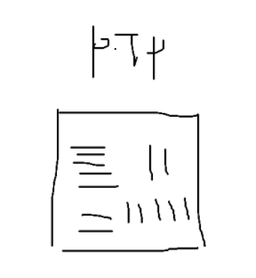
WIW에서 더 나아가서 이제는 칩 안에서 Etch, Photo, Depo를 할 때 Pattern Density에 따른 차이가 발생한다.
Q. Loading Effect에 의해 고립된 곳과 밀도가 높은 곳에서의 패턴의 크기가 달라진다. ADI CD 를 비교해보자
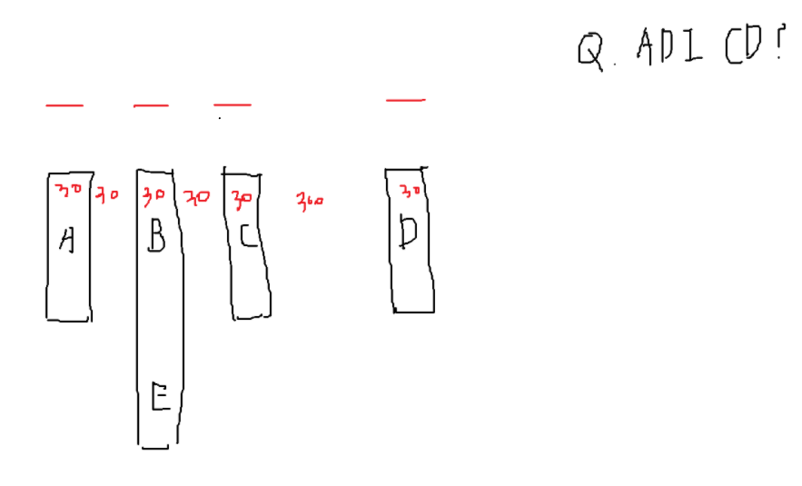
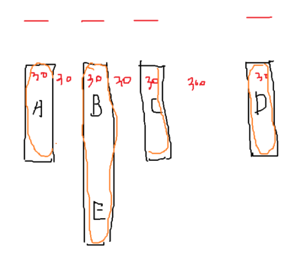
A.
D,E는 고립된 영역이다 회절이 가장 많다. B는 밀도가 가장 높고 회절이 적게 일어난다. A,C는 같다.
B > A=C > D=E
이걸 해결하기 위해서 OPC를 통해 미리 패턴의 크기를 보정하고, …를 한다.
Ref) 증착시에도 Metal 간의 간격이 좁을 때 Void가 생겼다.
18. Attenuated phase shift mask
대상: “Attenuated phase shift mask”
찾아보기 - 렛유인 교재랑 연관
- Phase shift mask는 양산에서 안쓴다고 한다. 양산에서 사용하는 건 이거니까 찾아보라고 하셨다.
19. Silicon Surface
- 표면이 Si-OH기가 생겨서 친수성이 되면 unstable한 표면이 되는 것이다.
- 친수성이면 접촉각이 90도 이하이고, 소수성이 접촉각 90도 이상이다.
20. Drying
- 물반점이나 이런 것들이 남지 않아야 한다.
- Isopropyl Alcohol을 사용해서 dry를 한다. 얘네들이 증발하면서 수분을 제거한다고 함
- 웨이퍼를 물에서 천천히 꺼내면서 IPA 증기를 공급한다. 뭔소리여 하여간 와인을 흔들어서 공기와 뭐시기 원리랑 같다고 함.
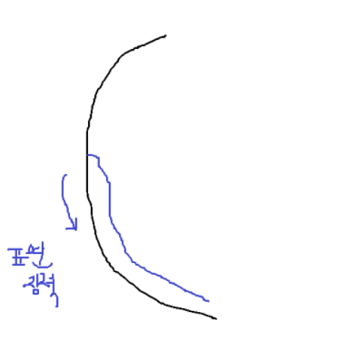
- 마랑고니(사람이름) Drying 이라고 한다.
21. Resist Strip
- PR이 요즘 Etching을 버티고, Ion Impantation이 끝나고 나서 변형이 된다. 그래서 예전에는 Wet etch 그러니까 황산을 사용해서 PR Strip을 했지만 이제는 태워버린다.
- 변형된 PR을 확실하게 날려버리기 위해서 태우는 Ashing을 진행한다. O₂ Ashing 이라는 건 태워서 날리게 된다. (Ash:재)
– PSK 회사가 이걸 하는 회사라고 한다.
- Ashing은 결국 plasma를 사용하니까 부산물이 생기니까 Cleaning을 진행해줘야한다.
- Metal이 있을 때는 황산을 사용하면 안된다.
63pg 사진추가하기
- Etch하고 난 다음에 변형된 모습이다.
- Post Clean은 Ashing을 하고 나서 없어진 모습이다.
22. Cleaning Perfectly
- 당연히 완벽하게는 안되겠지
- Particle이 없어야 하고, 금속이나 유기물 오염이 없어야하며, 자연 산화막이 없어야겠지
- Hydrophobic 소수성을 만들어서 particle을 없애는, Dry up을 할 때 IPA를 사용해서 날버린다, Surface Micro roughness는 MOS에서 이동도를 낮추기 때문에 맨 앞에 설명했던 온도와 농도를 낮추는 방향으로 가야한다.
66pg
- HF가지고 SiO₂를 Cleaning을 한다.
- Si-F bonding이 6eV인데, Si-H bonding 3.5eV 정도라고 한다.
23. ALE
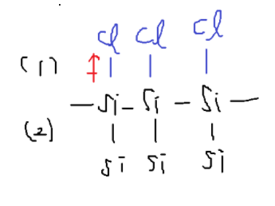
- Cl의 전기음성도가 크고 Cl-Si의 결합쪽으로 전자가 쏠리고 결합 세기가 강해진다. 그래서 (2)번쪽의 Si-Si 결합이 약해진다.
- Ar+ 같은 이온으로 툭툭 치게 되면 (2)번 쪽이 끊어지게 된다.
67pg
- Si의 경우 Cu보다 전기음성도가 훨씬 크니, Si는 Cu와의 결합이 강하다.
→ 훨씬 큰건 맞나? 34pg 그림에 나온 값을 보면 훨씬 큰건 아닌 것 같은데
Q. Cl₂가지고 Etch하는게 뭐야?
A. Al을 Etch 한다. Al + Cl₂ 인데 얘는 이방성으로 Etching이 된다. 그래서 Al + Cl₂ + BCl₃ → CCl₄ 가 생기게 되고 폴리머가 생기게 되면서 RIE 가 되면서 측벽이 보호되고 이방성 Etch가 된다. C는 PR에서 나온거다. 이건 고민할 것도 없지 당연히 알아야지.
[고분자 내용 조금 챙겨가기]
- Polymer가 어떻게 형성되는지 메커니즘
대상: “Q. Cl₂가지고 Etch하는게 뭐야?”
나 이 얘기 들은 기억이 없는데요?
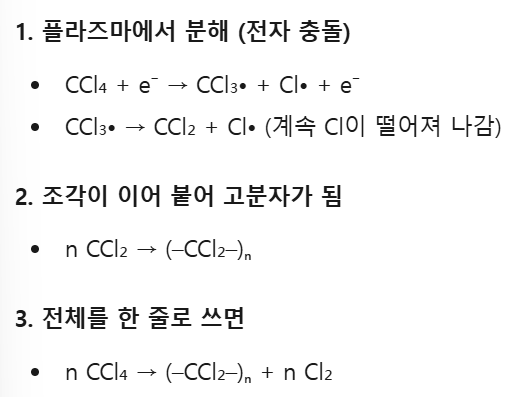
24. Etch에 대해서 정리해보자 (잠깐 딴 얘기)
(1) Chemical
- Liquid (물론 플라즈마도 있고) - 반응 gas etchant를 사용해서 뜯어내기
- 선택비가 좋다.
- Pressure가 높아지는 건 gas를 주입해서이다.
(2) Physical
- Ion Bombardment - 물리적으로 뜯어내기
- Anisotropic 이방성이 좋다. Ar+가 막 때릴거 아니야.
- Ar+이 잘 때리려면 m.f.p가 보장되어야 하니 압력이 낮아야겠지
- Energy는 Potential을 많이 줘야 잘 때리겠지?
(3) Plasma
- Chem
- Phy
- P+C = RIE
- Polymer 식각
- Future tech: Pulsed plasma, 높은 주파수+낮은 주파수
DC: 절연체가 안되니까 ..
RF: Self bias를 만들기 위해 조건
대상: “Polymer 식각”
이게 Borch 인가 borsch 인가 그건가?
대상: “높은 주파수+낮은 주파수”
흠
이렇게 섞어서 쓰거나 제어하는 이유가 뭐지?
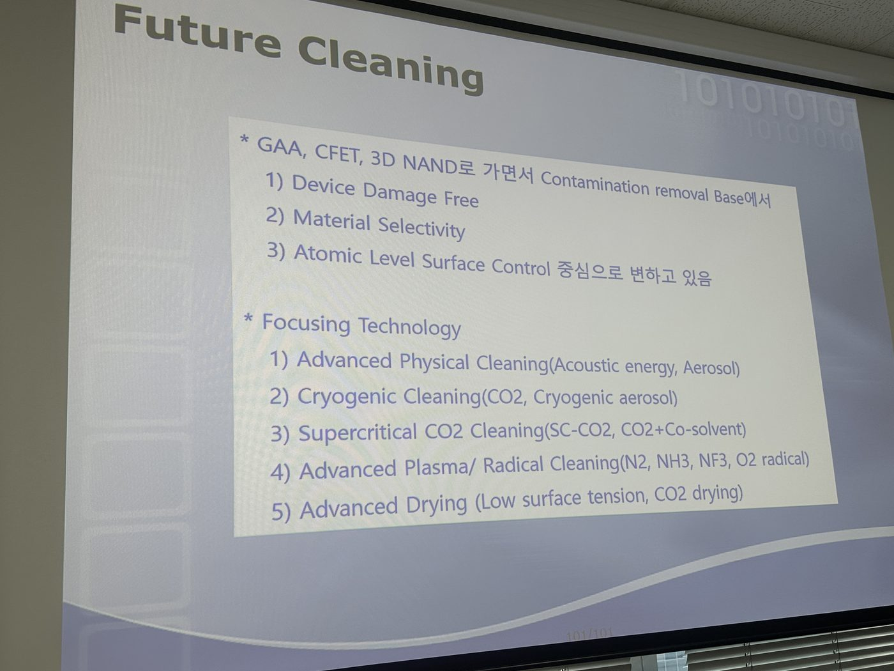
- CFET이 NMOS위에 PMOS가 있는 건가?
Q. 플라즈마의 색은 무슨 색인가?
A.

대상: “Q. 플라즈마의 색은 무슨 색인가?”
숙제